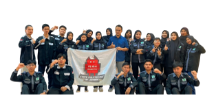

Abdillah Aziz Putra Susan
Ketua Umum IR 64 POLIJE
Memimpin inovasi, menyatukan kolaborasi, dan mengarahkan langkah IR 64 POLIJE dalam mengembangkan teknologi robotika masa depan.
WE ARE
Wadah inovasi mahasiswa POLIJE untuk merancang, membangun, dan mengembangkan teknologi robotika cerdas melalui kolaborasi, kreativitas, dan rekayasa teknologi.
Prestasi yang diraih
berita
anggota aktif

Wadah inovasi mahasiswa POLIJE untuk merancang, membangun, dan mengembangkan teknologi robotika cerdas melalui kolaborasi, kreativitas, dan rekayasa teknologi.
Bergabung sekarang

Ketua Umum IR 64 POLIJE
Memimpin inovasi, menyatukan kolaborasi, dan mengarahkan langkah IR 64 POLIJE dalam mengembangkan teknologi robotika masa depan.
Wakil Ketua Umum IR 64 POLIJE
Mendukung kepemimpinan, memperkuat kolaborasi, dan memastikan setiap inovasi IR 64 POLIJE berkembang menjadi langkah nyata menuju kemajuan teknologi robotika.
Bergabunglah dengan ribuan enjineer dari seluruh Indonesia dan raih karier impian di industri Teknologi Global.